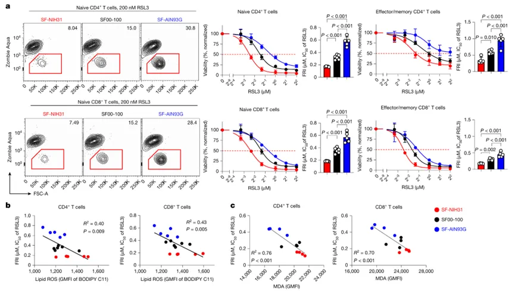
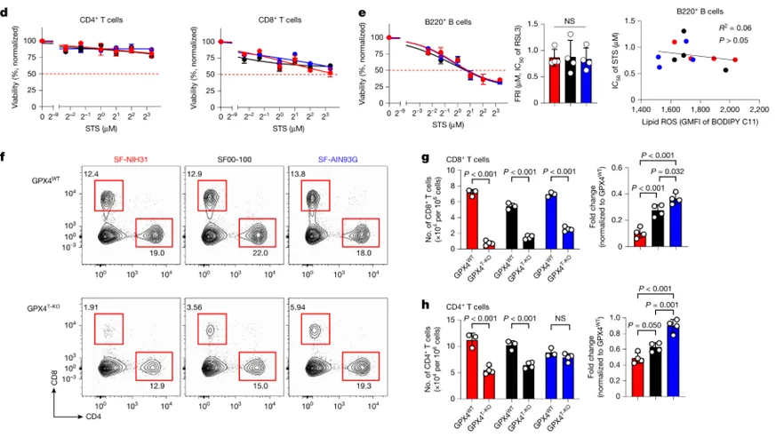
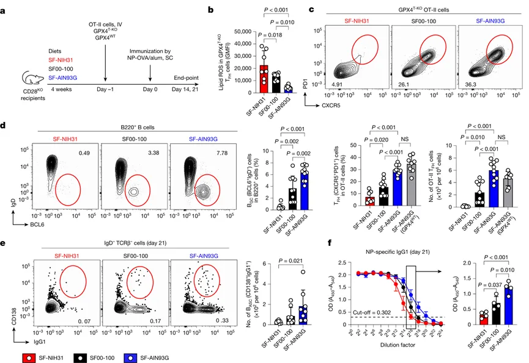
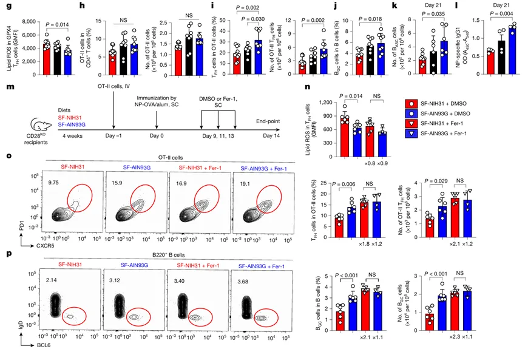
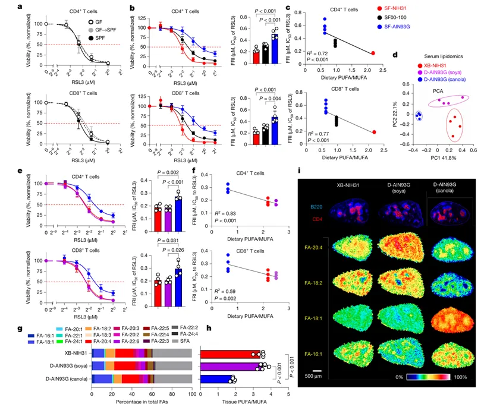
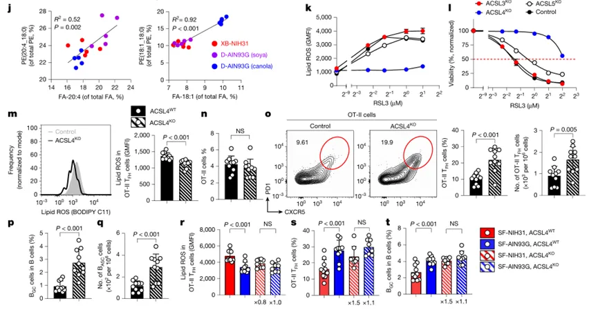
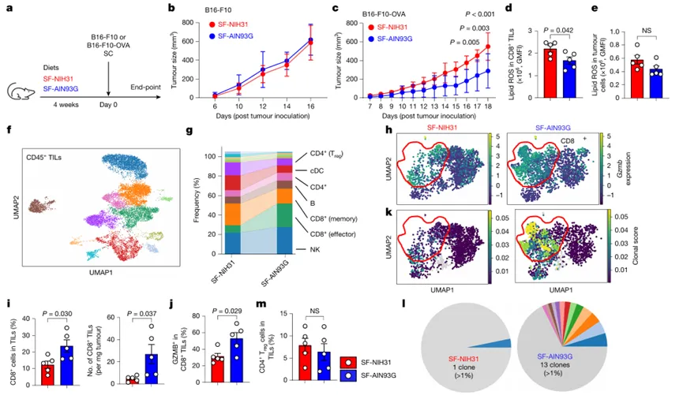
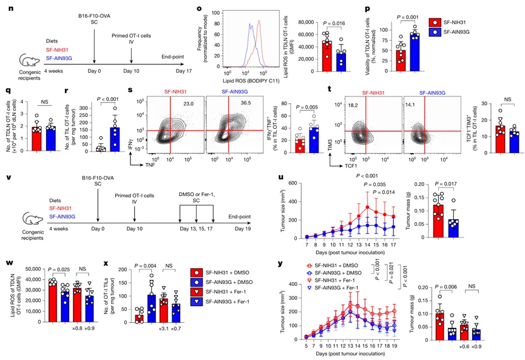
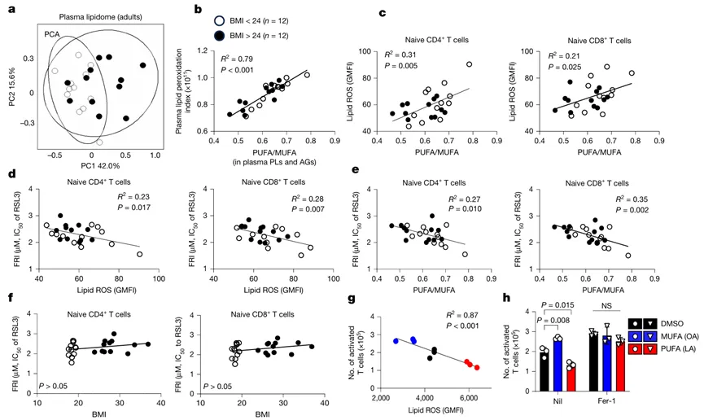
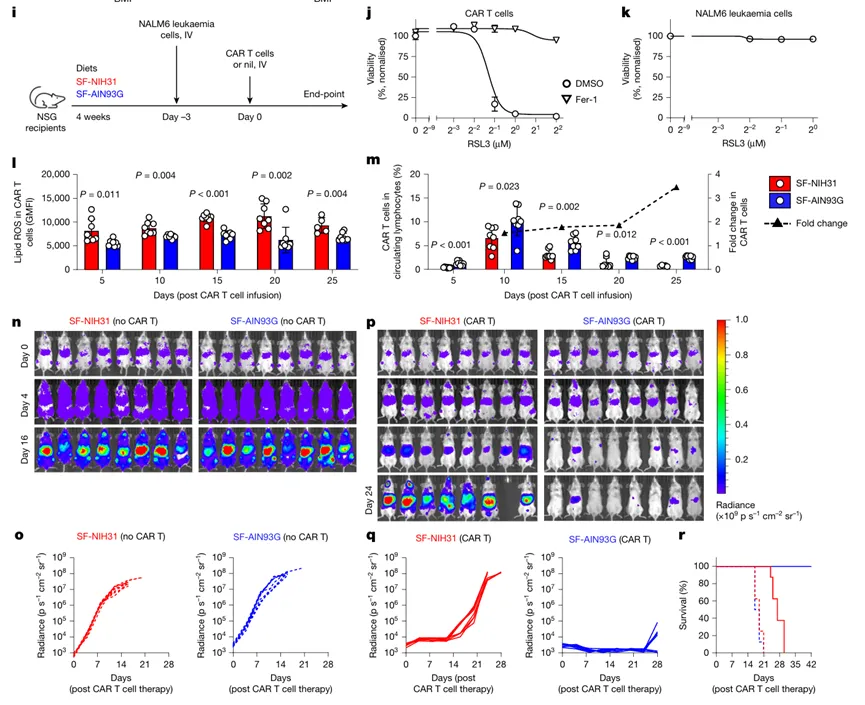

《Nature》也做铁死亡：脂质代谢驱动饮食对T细胞铁死亡与免疫调控
原文：https://mp.weixin.qq.com/s?__biz=MzAwMzIzOTk5OQ==&mid=2247537679&idx=1&sn=798530891fea99d1485b6f0340d24c22&chksm=9b3c2d5fac4ba449100f4a2892aff0d21872e204a456e24b73a9e0ac0580679bb1a3de0375d3#rd 合集：文献速递
** **
一、写在前面
本次汇报的是发布于《Nature》（IF=48.5）的文章：《Lipid metabolism drives dietary effectson Tcell ferroptosisand immunity》。中文名称：脂质代谢驱动饮食对 T 细胞铁死亡与免疫的调控效应**。**
文章链接：https://www.nature.com/articles/s41586-026-10193-4
这项研究主要关注了脂质代谢如何作为关键桥梁，将饮食因素转化为对T细胞铁死亡抵抗力及免疫功能的调节。尽管已知铁死亡在抗肿瘤免疫、体液免疫及记忆T细胞维持中起核心作用，但其生理决定因素此前尚不明确。研究人员通过对比小鼠在三种标准营养均衡饮食下的反应，发现饮食选择显著改变了T细胞对铁死亡的敏感性，并证实饮食源性脂肪酸（DEFs） 是这一过程的主要调节者。具体而言，短期摄入低多不饱和脂肪酸与单不饱和脂肪酸比值（低PUFA/MUFA）的饮食，不仅能增强滤泡辅助性T细胞（TFH）的存活和体液免疫，还能显著提升CD8+ T细胞在抗肿瘤免疫（包括CAR-T治疗模型）中的克隆扩增和效应功能。
研究进一步将这一机制延伸至人类，发现人体血浆中的PUFA/MUFA组成直接塑造了循环T细胞的铁死亡抵抗力，验证了动物实验结果的临床相关性。这些发现共同揭示了脂质代谢通过调控T 细胞铁死亡来精细“调谐”免疫反应的生理机制。更重要的是，该研究提出了一个具有转化医学价值的策略：通过优化脂质代谢（特别是调整膳食脂肪酸比例），可以有效增强疫苗效力并提升T细胞介导的免疫疗法的效果，为改善癌症治疗和抗病毒免疫提供了新的营养干预思路。
如果需要单细胞数据分析教学、生信热点全文复现、自测数据个性化分析辅导、常态化实验学习，欢迎联系客服微信[Biomamba_zhushou]。
二、主要内容
1、小鼠标准饮食调控 T细胞铁死亡


Figure1
标准啮齿类动物饲料 NIH31、SF00-100 和AIN93G 均能支持小鼠的正常生长，但其成分和原料来源各不相同。NIH31 和 SF00-100 是基于谷物的啮齿类动物饲料，而 AIN93G 是一种纯化饲料，常被用作营养素修饰研究的标准对照。文中的所有繁殖鼠均维持饲喂 SF00-100 饲料，但断奶后的幼鼠立即被随机分配至 SF-NIH31、SF00-100 或 SF-AIN93G 饲料组，持续喂养四周。首先，为了评估T细胞对铁死亡的抵抗力 ，作者将脾脏 T 细胞暴露于递增浓度的铁死亡诱导剂 RSL3 中，并在 12 小时后测量细胞活力。其中相对于溶剂对照组使细胞活力抑制达到一半时的 RSL3 浓度（即半最大抑制浓度，IC50）定义为铁死亡抵抗力指数 （FRI）。值得注意的是，喂食不同饲料的小鼠其 T 细胞表现出截然不同的 FRI 值。来自 SF-NIH31 喂养组的初始型和效应/记忆型 CD4+及 CD8+T 细胞表现出最低的铁死亡抵抗力，其 FRI 值比 SF-AIN93G 喂养组低 2 至 3 倍，而 SF00-100 喂养组则显示出中等的抵抗力（Fig.1a）。
MDA 是驱动铁死亡的脂质过氧化的关键生物标志物和副产物，作者发现CD4+和 CD8+ T 细胞的 FRI 值与诱导前细胞内脂质活性氧（ROS）和丙二醛（MDA）水平呈负相关（Fig.1b-c）,表明喂食不同饲料的小鼠，其体内 T 细胞承受着不同程度的铁死亡压力。为了评估饮食效应是否延伸至细胞凋亡 ，作者使用星形孢菌素（staurosporine）诱导细胞死亡。结果显示，脾脏 B 细胞发生了凋亡，而 T 细胞未发生；且不同饲料组间的凋亡敏感性相当，并与脂质 ROS 水平无相关性（Fig.1d-e）。
为了评估DEFs在体内对T细胞的作用 ，作者将 T 细胞特异性 GPX4 缺陷小鼠（Cd4-cre+Gpx4flox/flox，简称 GPX4T-KO）及其同窝对照小鼠（Cd4-cre−Gpx4flox/flox，简称 GPX4WT）分别喂食 SF-NIH31、SF00-100或 SF-AIN93G 饲料，为期四周。结果显示与 WT 对照组相比，KO 小鼠的总 CD8+ T 细胞和初始 CD8+ T 细胞数量严重减少，但减少的程度在各组中并不相同（Fig.1g），喂食 SF-AIN93G 的GPX4T-KO 小鼠保留了约 35% 的总 CD8+ T 细胞，这相当于喂食 SF-NIH31 的 GPX4T-KO 小鼠保留量的 3.5 倍（Fig.1f）。相应地，SF-AIN93G 组的 CD4+ T 细胞数量在基因型间无显著差异，而 SF-NIH31 组从 GPX4WT 到GPX4T-KO 则显示了约 50% 的减少（Fig.1h）。
综上所述，体外实验和体内表型一致表明，标准饲料SF-NIH31、SF00-100和SF-AIN93G会在T细胞中产生DEFs，并通过影响细胞存活率来显著调节T细胞的稳态。
2、DEFs 调控T细胞依赖的体液免疫


Figure2
接下来，作者探讨了T细胞中的DEFs是否能够调节免疫功能 。他们此前曾报道，滤泡辅助性T细胞（TFH）比非TFH效应CD4+ T细胞更容易发生铁死亡。为了评估DEFs在调节TFH细胞反应中的作用 ，作者将来自喂食SF00-100饲料的供体小鼠的初始型GPX4T-KO OT-II细胞，过继转移至分别喂食SF-NIH31、SF00-100或SF-AIN93G饲料且带有同系标记CD45.1的CD28敲除受体小鼠体内，随后用铝佐剂偶联的4-羟基-3-硝基苯乙酰半抗原-卵清蛋白（NP-OVA/Alum）进行免疫（Fig.2a）。在免疫后第14天，来自SF-AIN93G喂养组的OT-II细胞表现出最低的脂质活性氧（ROS）水平，而来自SF-NIH31喂养组的细胞则最高（Fig.2b），脂质ROS水平与TFH分化呈负相关，SF-AIN93G喂养的小鼠中几乎能够完全挽救GPX4T-KO OT-II细胞中TFH生成的缺陷（Fig.2c）。与此同时，SF-AIN93G喂养恢复了BGC细胞、BASC细胞以及NP特异性抗体的产生；而这些指标在SF-NIH31喂养组中受损，在SF00-100喂养组中则有所降低（Fig.2d-f）。以上结果表明，DEFs关键性地决定了免疫小鼠中GPX4缺陷型TFH细胞的分化和功能。****
接下来，作者通过类似的过继转移实验 ，使用野生型（GPX4WT）OT-II细胞，评估了饮食在生理程度上调节野生型T细胞功能的范围。结果显示，SF-NIH31喂养小鼠的GPX4WT TFH细胞中的脂质ROS水平高于SF-AIN93G喂养组（Fig.2g）。尽管不同饮食组间OT-II细胞的总数无显著差异（Fig.2h），但SF-AIN93G组再次显示出更高比例的TFH细胞（Fig.2i），并伴随最高数量的BGC和BASC细胞（Fig.2j-k）以及增加的NP特异性抗体（Fig.2l）。如果饮食对T细胞依赖性体液免疫的影响是由T细胞对铁死亡抵抗力的差异所驱动的，那么这种影响应能被铁死亡抑制剂所消除。为了验证这一点，作者聚焦于显示不同体液反应的GPX4WT OT-II细胞转移及免疫模型中的SF-AIN93G和SF-NIH31喂养组。在TFH和BGC反应的高峰期（免疫后第9–13天）给予铁死亡抑制剂Ferrostatin-1（Fer-1）（Fig.2m），结果导致SF-NIH31喂养组TFH细胞中的脂质ROS大幅降低，并消除了饮食组间的差异（Fig.2n）。相应地，Fer-1优先增强了SF-NIH31喂养组的TFH和BGC反应，使各饮食组的反应趋于一致（Fig.2o-p）。这些发现表明，T细胞依赖性体液免疫的饮食差异主要是由DEFs介导的。****
3、脂质代谢介导体液免疫中的DEFs


Figure3接下来作者评估了微生物对DEFs的贡献 。结果显示，来自无特定病原体（SPF）小鼠、无菌（GF）小鼠以及通过与 SPF 小鼠共居获得微生物群的 GF 小鼠（GF→SPF）的 T 细胞，表现出相当的铁死亡抵抗力（Fig.3a）。此外，在喂食灭菌后的 SF-NIH31、SF00-100 或 SF-AIN93G 饲料的无菌小鼠中，CD4+和 CD8+ T 细胞再次出现了 DEFs（Fig.3b）。随后，作者测试了哪些饮食成分决定了 T 细胞中的 DEFs。标准饮食中的候选成分包括半胱氨酸、维生素 E、硒、铁、多不饱和脂肪酸（PUFAs）和单不饱和脂肪酸（MUFAs）（Fig.3f-h）。结果发现三种饮食中的膳食 PUFA/MUFA 比率与脂质的 FRI 呈负相关。与来自 SF-AIN93G 喂养小鼠的细胞相比，来自 SF-NIH31 喂养小鼠的 T 细胞富含 PUFAs 和含 PUFAs 的脂质，而耗竭了 MUFAs 和含 MUFAs 的脂质。为了直接测试脂质代谢对DEFs的贡献 ，作者比较了两种仅在脂质来源上不同的 AIN93G 配方。使用了两种 D-AIN93G 配方：原始的 D-AIN93G 配方与 SF-AIN93G 相同，使用富含 MUFAs 的芥花油（canola oil），下文称为 D-AIN93G (canola)；D-AIN93G (soya) 使用大豆油，具有更高的 PUFA/MUFA 比率，与 XB-NIH31 相似。血清脂质组学谱分析显示 ，喂食 D-AIN93G (soya) 的小鼠聚类更接近喂食 XB-NIH31 的小鼠（Fig.3d）。而且喂食 D-AIN93G (soya) 或 XB-NIH31 小鼠的 T 细胞表现出同样降低的 FRI，两者均显著低于来自喂食 D-AIN93G (canola) 小鼠的细胞（Fig. 3e-f）。这些结果表明，膳食脂肪酸组成是T细胞中DEFs的主要驱动因素。****
为了建立膳食脂肪酸摄入与淋巴组织中脂肪酸生物利用度及脂质代谢之间的联系， 作者对喂食 XB-NIH31、D-AIN93G (soya) 和 D-AIN93G (canola) 小鼠的淋巴组织进行了空间代谢组学分析 。在脾脏中，T 细胞区最丰富的 PUFAs 是花生四烯酸（FA-20:4）和亚油酸（FA-18:2），最丰富的 MUFAs 是油酸（FA-18:1）和棕榈油酸（FA-16:1）（Fig. 3g）。与喂食 D-AIN93G (canola) 的小鼠相比，喂食 D-AIN93G (soya) 的小鼠在 T 细胞区的 PUFA/MUFA 比率高出两倍，达到了与喂食 XB-NIH31 小鼠相似的水平（Fig. 3h）。花生四烯酸是一种条件必需 PUFA，可掺入质膜磷脂的很大一部分。事实上，这种高丰度 PUFA 的水平与 T 细胞区中磷脂磷脂酰乙醇胺 PE(20:4_18:0) 的水平相关（Fig. 3j）。
长链酰基辅酶 A 合成酶（ACSL）生成用于磷脂生物合成的脂肪酰辅酶 A（活化脂肪酸），并且在脂肪酸底物偏好和组织表达上有所不同。作者发现通过CRISPR–Cas9介导 的 OT-II 细胞中ACSL4 敲除大幅降低了 T 细胞中的脂质 ROS（Fig. 3k）。并增强了 T 细胞对铁死亡的抵抗力（Fig. 3l）。ACSL4 在调节 T 细胞铁死亡中的主导作用使作者能够直接测试含 PUFAs 的磷脂对 TFH 细胞功能和 T 细胞中 DEFs 的贡献。将 ACSL4 敲除的 OT-II 细胞过继转移至喂食 SF00-100 的 CD28 敲除受体小鼠体内，随后用 NP-OVA/Alum 进行免疫，发现与对照 OT-II 细胞相比，ACSL4 缺失显著降低了脂质 ROS（Fig. 3m）。在不影响 OT-II 细胞总数量的情况下（Fig. 3n），ACSL4 缺陷使 TFH 细胞数量增加了一倍（Fig. 3o），并伴随 BGC 和 BASC 细胞形成的增强（Fig. 3p-q）。这些结果揭示了铁死亡守门人ACSL4关键性地调节TFH细胞的生成和功能。T细胞中的DEFs主要源于差异化的膳食脂质摄入和代谢，以及由此导致的T细胞中磷脂合成的改变。
4、DEFs 调控T细胞抗肿瘤免疫


Figure4接下来作者利用对铁死亡具有抵抗力的B16-F10黑色素瘤模型 评估了其对抗肿瘤免疫的影响，从而最大限度地减少了肿瘤内在因素的干扰。结果显示，B16-F10肿瘤在喂食SF-NIH31和SF-AIN93G饲料的小鼠中生长情况相似（Fig.4a-b）。相比之下，表达OVA的B16-F10肿瘤由于OVA抗原增强了免疫原性，其在喂食SF-AIN93G的小鼠中的生长显著慢于喂食SF-NIH31的小鼠（Fig.4c）。来自喂食SF-AIN93G小鼠的肿瘤浸润CD8+T细胞也表现出比喂食SF-NIH31小鼠更低的脂质ROS（Fig.4d）。但肿瘤细胞内的脂质ROS在不同饮食组间几乎没有差异（Fig.4e）。
为了全面表征饮食对抗肿瘤免疫反应的影响 ，作者对CD45+肿瘤浸润白细胞（TILs）进行了单细胞RNA测序（scRNA-seq）和单细胞T细胞受体测序（scTCR-seq） （Fig.4f）。结果显示，与喂食SF-NIH31的小鼠相比，喂食SF-AIN93G的小鼠其TILs中由 Gzmb 、 Prf1 和 Ifng 标记的效应CD8+ T细胞更为丰富（Fig.4g-h），且这一结果经流式细胞术 进一步证实（Fig.4i-j）。此外，scTCR-seq结果显示来自喂食SF-AIN93G小鼠的CD8+ T细胞表现出更显著的克隆扩增（Fig.4k），TIL调节性T细胞（Treg细胞）的频率保持不变（Fig.4m）。为了直接评估肿瘤特异性CD8+ T细胞中的DEFs ，作者将体外致敏的OT-I细胞过继转移至携带B16-F10-OVA肿瘤且带有同系标记、分别喂食SF-AIN93G或SF-NIH31饲料的小鼠体内，结果显示与喂食SF-NIH31的小鼠相比，喂食SF-AIN93G小鼠体内的OT-I细胞表现出降低的脂质ROS水平，以及对RSL3诱导的铁死亡具有更强的抵抗力（Fig.4o-p）。值得注意的是，虽然不同饮食组间tdLNs中的OT-I细胞数量相当（Fig.4q），但在喂食SF-AIN93G的小鼠中，肿瘤浸润的OT-I细胞数量却是前者的五倍以上（Fig.4r）。与多克隆CD8+ T细胞的scRNA-seq分析结果一致（Fig.4g–l）。来自喂食SF-AIN93G小鼠的OT-I细胞表现出增强的效应功能，特征是IFNγ和TNF共表达增加，但未改变TCF-1−TIM-3+的耗竭表型（Fig.4s–t）。鉴于喂食SF-AIN93G的小鼠体内TIL OT-I细胞数量增加且效应功能增强，其肿瘤控制效果优于喂食SF-NIH31的小鼠（Fig.4u）。为了确认饮食对抗肿瘤免疫的影响是否由T细胞对铁死亡抵抗力的差异所介导 ，作者在接受过OT-I细胞转移的、携带B16-F10-OVA肿瘤且分别喂食SF-AIN93G或SF-NIH31的小鼠中进行了Ferrostatin-1（Fer-1）治疗（Fig.4v）。Fer-1更显著地降低了喂食SF-NIH31小鼠体内OT-I细胞的脂质ROS，从而消除了饮食组间的差异（Fig.4w）。相应地，Fer-1选择性地增加了喂食SF-NIH31小鼠体内肿瘤浸润的OT-I细胞数量，使各饮食组的细胞丰度趋于一致（Fig.4x）。结果，Fer-1治疗改善了喂食SF-NIH31小鼠的肿瘤控制效果，使其达到与喂食SF-AIN93G小鼠相当的水平（Fig.4y）。综上所述，来自CD4 + T细胞依赖性体液免疫模型和CD8 + T细胞介导的细胞免疫模型的这些结果表明，DEFs在生理上广泛地调控小鼠免疫反应中的T细胞功能。
5、系统性脂质塑造人类 T细胞的铁死亡


Figure5在确定脂肪酸摄入和脂质代谢是小鼠T细胞中饮食源性效应（DEF）的关键驱动因素后，作者考察了这一机制是否在人类中保守存在 。首先招募了年轻成年人以尽量减少年龄相关代谢失调的混杂影响，受试者包括超重（BMI > 24）和非超重（BMI < 24）个体（每组 n = 12）。血浆脂质组学谱分析显示 ，两组之间的整体脂质景观存在大量重叠（Fig.5a），正如预期，年轻成年人血浆磷脂和酰基甘油中的PUFA/MUFA比率与各自的过氧化指数高度相关（Fig.5b）PUFA/MUFA比率还与初始CD4+或CD8+ T细胞中的细胞脂质活性氧（ROS）水平呈正相关，反映了不同程度的细胞铁死亡压力（Fig.5c）。CD4+或CD8+ T细胞的FRI与细胞脂质ROS水平以及血浆PUFA/MUFA比率呈负相关（Fig.5d-e）。
为了直接测试脂质摄入是否影响T细胞反应 ，作者在小鼠或人类T细胞激活期间，在无血清培养基中补充了主要的血浆PUFA——亚油酸，或MUFA——油酸。结果显示，亚油酸显著降低了T细胞的存活和扩增，而油酸则对T细胞具有保护作用。人类T细胞的扩增与脂质ROS水平呈负相关（Fig.5g）。 为了评估体内人类T细胞功能中的DEFs，作者检查了人类CD19 CAR-T细胞在喂食SF-NIH31或SF-AIN93G饲料的免疫缺陷NSG小鼠中清除人类白血病细胞的能力（Fig.5i）。在所有时间点，与喂食SF-NIH31的小鼠相比，喂食SF-AIN93G小鼠体内的人类CAR-T细胞始终表现出较低的脂质ROS水平，并且在循环中的持久性逐步提高了2至4倍（Fig.5l-m）。在没有CAR-T细胞治疗的情况下，两组饮食间的白血病进展相当（Fig.5n-o）。然而，生物发光成像测量的肿瘤负荷结果显示 ，接受人类CAR-T细胞治疗的喂食SF-AIN93G小鼠表现出明显优于喂食SF-NIH31小鼠的治疗效果（Fig.5p-q）。结果，所有接受CAR-T细胞治疗的喂食SF-NIH31小鼠在治疗后约四周达到伦理终点，而所有接受CAR-T细胞治疗的喂食SF-AIN93G小鼠存活时间均超过六周（Fig.5r）。综上所述，这些结果表明DEFs在调节人类T细胞存活和功能方面发挥着关键作用，强调了其作为一种保守机制的重要性。
三、总结与讨论
该研究揭示了膳食脂质组成，特别是多不饱和脂肪酸（PUFA）与单不饱和脂肪酸（MUFA）的比例，是决定T细胞铁死亡抵抗力及免疫功能的关键生理因素。 通过对比不同标准饲料喂养的小鼠，研究者发现高PUFA/MUFA比例的饮食会增加T细胞内的脂质活性氧水平，使其更易发生铁死亡，而高MUFA饮食则能显著增强T细胞的存活率。这一效应并非由微生物群、微量元素（如硒、铁、维生素E）或基因表达差异介导，而是直接源于饮食脂肪酸摄入导致的细胞膜磷脂成分改变；其中，长链酰基辅酶A合成酶ACSL4作为关键酶，优先激活PUFA参与磷脂合成，从而成为调控T细胞铁死亡敏感性的“守门人”，其缺失可消除饮食带来的差异并显著提升滤泡辅助性T细胞（TFH）的功能。
在功能层面，这种由脂质代谢驱动的铁死亡敏感性差异深刻影响了多种免疫反应。在抗肿瘤免疫中，富含MUFA的饮食通过降低CD8+ T细胞的脂质过氧化，促进了其在肿瘤微环境中的克隆扩增和效应功能，从而增强了肿瘤控制能力，且使用铁死亡抑制剂可逆转低MUFA饮食导致的免疫缺陷。更重要的是，这一机制在人类中高度保守：人体血浆脂质谱中的PUFA/MUFA比率与T细胞的铁死亡易感性呈正相关，且直接影响CAR-T细胞在体内的持久性和治疗白血病的效果。该研究不仅强调了饮食成分是免疫学和铁死亡研究中常被忽视的混杂变量，也为通过优化脂质代谢来改善疫苗接种、抗肿瘤免疫及细胞疗法疗效提供了新的策略框架。

如何联系我们

 留一个领取资料、开箱即用的单细胞分析镜像的微信号[Biomamba_zhushou]，方便各位随时交流。同时我们也构建了交流群矩阵，欢迎大家入群讨论。
大家可以阅读完这几篇之后添加给生信入门初学者的小贴士
没有检索，就没有发言权
留一个领取资料、开箱即用的单细胞分析镜像的微信号[Biomamba_zhushou]，方便各位随时交流。同时我们也构建了交流群矩阵，欢迎大家入群讨论。
大家可以阅读完这几篇之后添加给生信入门初学者的小贴士
没有检索，就没有发言权
已有生信基地联系方式的同学无需重复添加

 您点的每个赞和在看，我都认真当成了喜欢
您点的每个赞和在看，我都认真当成了喜欢